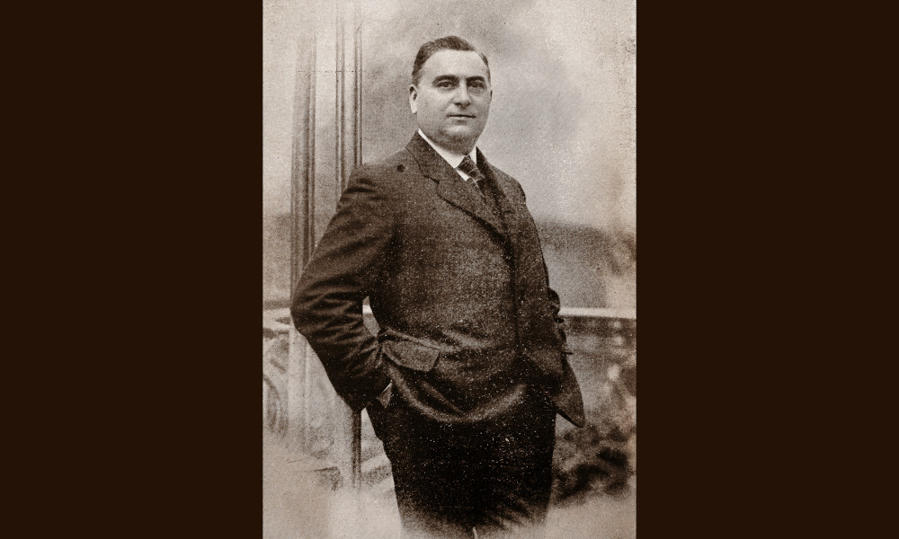

Galliani

- Dati biografici
- Albero familiare
- Luoghi
- Bibliografia
- Opere trattate
Antonio Galliani fu titolare di un negozio di antiquariato in via Mazzini 50 a Bologna negli anni Dieci del Novecento. Ricordato da Demetrio Tolosani sulle pagine della rivista “L’Antiquario” del 1913 come finissimo esperto d’arte e abile commerciante, abbracciò la professione di mercante dopo la carriera teatrale a fianco di Eleonora Duse, di cui frequentò la Compagnia Drammatica della Città di Roma. Gestiva la propria attività commerciale con la moglie Guglielmina.
Bibliografia essenziale:
- Bellania, S. (2015), Duse e Novelli nelle Glosse Zum Wiener Theater (1903-196) di Herman Bahr., In «Acting Archives Review», V, 10, pp. 68-84
- Tolosani, D. (1913), I colleghi d'Italia: Bolognesi., In «L'Antiquario», VI, 2-3, pp. 9-12
Vedi le opere transitate presso l'antiquario presenti nel catalogo della Fondazione Zeri